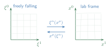
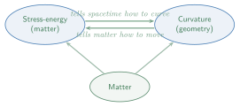

In the previous lecture we reviewed the fundamental assumptions of Newtonian physics—in particular, the preferred reference frame and the three conceptually distinct notions of mass. We now turn to the two big principles that motivated Einstein to formulate general relativity: the equivalence principle and Mach’s principle.
The first, and arguably most important, principle underlying the formulation of general relativity is the Einstein equivalence principle. In its modern form, EEP consists of three parts:
Universality of free fall (UFF) (also known as
the weak equivalence principle, WEP).
Not rejected (a key distinction: in physics we cannot confirm a
hypothesis, only fail to reject it) e.g. in torsion balance experiments
(cf. §[sec:UFF]).
Local Lorentz invariance (LLI).
In a freely falling reference frame, the laws of non-gravitational
physics are those of special relativity—there is no preferred reference
frame. Recall that the existence of a preferred frame was a fundamental
assumption of Newtonian physics (§[sec:prerelativity]); this is one
of the assumptions one must already abandon in the transition to special
relativity. In particular, the laws of physics do not depend on the
orientation or velocity of the observer.
Best bounds from Michelson–Morley–type experiments: \[\label{eq:LLI-bound} \frac{\Delta c}{c} < 5 \times 10^{-17}\,.\]
Local position invariance (LPI).
Special relativity holds independent of spacetime position (no
“preferred” location).
UFF says all bodies fall the same way. LLI says physics looks the same regardless of your velocity. LPI says physics looks the same regardless of where you are. Together, they force gravity to be a property of spacetime geometry rather than an ordinary force.
LPI is equivalent (exercise) to the universality of gravitational redshift (UGR): clock rates are universally affected by the gravitational field.
Show that for small velocities and weak gravitational fields, the fractional change in clock rate between two positions x1 and x2 is $$\label{eq:grav-redshift} \boxed{\frac{\Delta\nu}{\nu} = \frac{\Delta\phi}{c^2}}\,,$$ where ν(x1), ν(x2) are the clock rates at positions 1, 2 and Δϕ = ϕ(x1) − ϕ(x2). Hint: There are (at least) two approaches—a Doppler-shift argument, or an argument using the quantum expression E = hν for the energy of a photon and tracking how it changes at different points in the gravitational field.
Estimate: On Earth’s surface, for a height difference \(\lVert \boldsymbol{x}_1 - \boldsymbol{x}_2 \rVert \sim 30\;\mathrm{cm}\), this effect is \(\Delta\phi/c^2 \sim 10^{-17}\)—and has been measured! Modern atomic clocks are sensitive enough that gravitational redshift is now routinely measurable over laboratory-scale height differences.
A clock at the bottom of a gravitational potential well runs slower than a clock at the top. GPS satellites must correct for this: their clocks run faster (by ∼ 45 μs/day) than ground-based clocks. Without this correction, GPS positions would drift by ∼ 10 km/day.
Observation: Using EEP, it is possible to “derive” (or at least argue convincingly) that gravity should be described geometrically (K. Thorne, D. Lee, & A. Lightman, Phys. Rev. D, 7, 3563–3578, 1973).
One should be careful here: formulating a physical theory in geometric language is, by itself, no particular magic. Newton’s mechanics can be formulated geometrically (via symplectic geometry), as can thermodynamics, statistical mechanics, and quantum mechanics (via Kähler manifolds). If you are willing to work hard enough, just about any physical theory admits a geometric formulation.
What makes general relativity special is not merely that it has a geometric formulation, but what that geometry means physically:
All matter—electrons, protons, gluons, the Higgs field—couples to the same geometry, namely that of spacetime. A single metric suffices to describe all of these couplings simultaneously. This universal coupling is what distinguishes general relativity from any other theory that happens to admit a geometric formulation.
Statement: No external, static, homogeneous gravitational field can be detected in a freely falling elevator.
This is one of Einstein’s classic thought experiments—“Einstein’s elevator.” Note the qualifiers static and homogeneous: if the gravitational field varies in space (is not translation-invariant), then tidal forces arise, and these can be detected even in a freely falling frame. This distinction will become important when we discuss curvature.
Suppose we have \(N\) (non-relativistic) particles moving in a pair force field \(\boldsymbol{F}(\boldsymbol{x}_j - \boldsymbol{x}_k)\) and an external gravitational field \(\boldsymbol{g}(\boldsymbol{x}) = \boldsymbol{g}\) (constant), with \(\boldsymbol{F}(\boldsymbol{0}) = \boldsymbol{0}\).
Equations of motion: \[\label{eq:eom-N-particles} m_j\,\frac{d^2\boldsymbol{x}_j}{dt^2} = m_j\,\boldsymbol{g} + \sum_{k=1}^{N} \boldsymbol{F}(\boldsymbol{x}_j - \boldsymbol{x}_k)\,.\]
We now make a non-Galilean change to an accelerating (freely falling) frame: \[\label{eq:accelerating-frame} \boldsymbol{x}' = \boldsymbol{x} - \tfrac{1}{2}\,\boldsymbol{g}\,t^2\,,\qquad t' = t\,.\]
Then the equations of motion become (exercise): \[\label{eq:eom-freefall} \boxed{m_j\,\frac{d^2\boldsymbol{x}'_j}{dt'^2} = \sum_{k} \boldsymbol{F}(\boldsymbol{x}'_j - \boldsymbol{x}'_k)}\,.\] The gravitational field has been eliminated—the freely falling frame sees only the inter-particle forces. This is a first concrete demonstration of EEP within Newtonian physics.
We now tell essentially the same story, but within special relativity—a more demanding calculation, and a good check on one’s special-relativistic mechanics. These calculations are meant to give facility with non-Galilean, non-Lorentzian coordinate changes; along the way, many of the symbols of differential geometry will already start to appear in this quite elementary setting.
According to EEP, for any particle moving purely under the influence of a gravitational field, there exists a freely falling coordinate system \((\xi^0,\,\xi^1,\,\xi^2,\,\xi^3)\) such that \[\label{eq:force-free} \boxed{\frac{d^2\xi^\alpha}{d\tau^2} = 0} \qquad (\equiv\;\text{force-free motion})\,,\] where \(\tau\) is the proper time, defined by \[\label{eq:proper-time-flat} d\tau^2 = -\eta_{\alpha\beta}\,d\xi^\alpha\,d\xi^\beta\,,\] or equivalently, \[\label{eq:4vel-normalisation} -1 = \eta_{\alpha\beta}\, \frac{d\xi^\alpha}{d\tau}\,\frac{d\xi^\beta}{d\tau}\,.\]
Here \(\eta_{\alpha\beta}\) is the Minkowski metric: \[\label{eq:minkowski} \eta_{\alpha\beta} = \diag(-1,\,+1,\,+1,\,+1)\,.\]
Einstein’s summation convention: \[u_\alpha\,\xi^\alpha \;\equiv\; \sum_{\alpha=0}^{3} u_\alpha\,\xi^\alpha\,.\] Repeated indices (one “upstairs,” one “downstairs”) are summed over.
Suppose \(x^\mu\) denotes some other—completely general—set of coordinates: a lab frame, a rotating frame, a frame “jumping up and down on a trampoline”—anything at all:

The freely falling coordinates are functions of the lab coordinates: \[\xi^\alpha = \xi^\alpha(x^0,\,x^1,\,x^2,\,x^3)\,.\]
The force-free equation [eq:force-free] becomes \[0 = \frac{d^2\xi^\alpha}{d\tau^2} = \frac{d}{d\tau}\!\left( \frac{\partial \xi^\alpha}{\partial x^\mu}\,\frac{dx^\mu}{d\tau} \right) = \frac{\partial \xi^\alpha}{\partial x^\mu}\,\frac{d^2 x^\mu}{d\tau^2} + \frac{\partial^2\xi^\alpha}{\partial x^\mu\,\partial x^\nu}\, \frac{dx^\mu}{d\tau}\,\frac{dx^\nu}{d\tau}\,.\]
Multiplying by \(\frac{\partial x^\lambda}{\partial \xi^\alpha}\) and using \(\frac{\partial \xi^\alpha}{\partial x^\mu}\frac{\partial x^\lambda}{\partial \xi^\alpha} = \delta^\lambda{}_\mu\), we obtain the geodesic equation: \[\label{eq:geodesic} \boxed{ \frac{d^2 x^\lambda}{d\tau^2} + \Gamma^{\lambda}{}_{\mu\nu}\, \frac{dx^\mu}{d\tau}\,\frac{dx^\nu}{d\tau} = 0}\,,\] where the affine connection (Christoffel symbol) is \[\label{eq:christoffel-def} \Gamma^{\lambda}{}_{\mu\nu} = \frac{\partial x^\lambda}{\partial \xi^\alpha}\, \frac{\partial^2\xi^\alpha}{\partial x^\mu\,\partial x^\nu}\,.\] The affine connection encodes how the freely falling coordinates depend on our (possibly wild) lab coordinates, together with a Jacobian factor. When we come to formulate differential geometry properly (starting in lecture 3), we will encounter the geodesic equation and affine connections in much greater generality—but they already appear here, in this entirely elementary calculation.
To build intuition for the geodesic equation, consider a 2D surface embedded in ℝ3. The shortest paths on the surface—the geodesics—are not straight lines in the ambient space; they bend to stay on the surface. The deviation from a straight line is governed by the Christoffel symbols, which encode the surface’s curvature.
Initially parallel geodesics on a Gaussian-bump surface \(z = e^{-(x^2+y^2)/2}\) — curvature causes the paths to converge, cross, and diverge (geodesic deviation). Open full interactive version with more controls.
The proper time [eq:proper-time-flat] expressed in the lab coordinates becomes \[\begin{aligned} d\tau^2 &= -\eta_{\alpha\beta}\,d\xi^\alpha\,d\xi^\beta = -\eta_{\alpha\beta}\, \frac{\partial \xi^\alpha}{\partial x^\mu}\,\frac{\partial \xi^\beta}{\partial x^\nu}\, dx^\mu\,dx^\nu \notag\\ &= -g_{\mu\nu}\,dx^\mu\,dx^\nu\,, \label{eq:proper-time-general} \end{aligned}\] where \[\label{eq:metric-def} \boxed{g_{\mu\nu} = \frac{\partial \xi^\alpha}{\partial x^\mu}\,\frac{\partial \xi^\beta}{\partial x^\nu}\, \eta_{\alpha\beta}}\] is the metric. The metric collects all the information that appeared when we changed to the new coordinate system; it is the object that allows us to compute proper time (and hence distances and clock rates) without having to transform back to freely falling coordinates every time.
The metric gμν tells you how to measure distances and time intervals in arbitrary coordinates. In freely falling coordinates it reduces to the flat Minkowski metric ηαβ. The deviation of gμν from ηαβ encodes the gravitational field. Ultimately, gμν is all one needs to describe the geometry of spacetime.
So far we have seen only one half of the story: the geometry of spacetime tells freely falling particles how to move (via the geodesic equation). The other half—that matter tells spacetime how to curve—requires Mach’s principle and, eventually, Einstein’s field equations.
Mach’s principle is the second key set of ideas—really a circle of ideas, less precise than EEP and harder to make mathematically sharp, but profoundly influential on Einstein’s thinking.
All matter in the universe should contribute to the local definition of “non-accelerating” and “non-rotating.” In a universe devoid of matter, these concepts should have no meaning.
This is a deep statement: the very notions of acceleration and rotation are not absolute but are determined by the matter content of the universe. Without matter, there is nothing with respect to which one could be “accelerating” or “rotating.”
General relativity is the following statement:
The observer-independent properties of spacetime are described by a spacetime metric gμν—a symmetric rank-2 tensor field assigning four numbers to each spacetime event—which need not have the flat form ημν of special relativity. Curvature is that property of the metric that accounts for the physical effects of gravitation. Furthermore, curvature is determined by the distribution of stress-energy and momentum, and vice versa.
The “vice versa” is crucial: stress-energy tells spacetime how to curve, and curvature tells matter how to move. This self-referential, nonlinear interplay between geometry and matter is what makes general relativity so remarkable. The extraordinary—one might say almost miraculous—thing is that this all holds together: the theory does not collapse into inconsistency, but instead forms a beautifully self-contained whole.

Actually implementing the physical content of this formulation—computing curvature, writing down Einstein’s field equations, extracting predictions—requires the mathematics of spacetime manifolds that are not flat. That is the work we commence in the next lecture, beginning with the theory of differentiable manifolds.